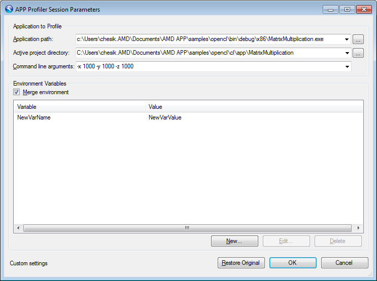

This window allows you to configure the parameters used to initiate a profiler session. There are several circumstances under which this window will appear:
-
It will appear automatically if the profiler is unable to use settings from the Visual Studio project to initiate a profiler session.
-
You can also tell the profiler to show this dialog each time you profile an application, in case you want to view or change any parameters before profiling. To do this, enable the Show profile setting before profiling option on the General Page of the APP Profiler Settings Window .
When the window first appears, it shows the current settings from the Visual Studio project. If you modify the settings and click OK, the profiler will use the modified settings when initiating a profile session.
Application to Profile
- Application path This field shows the full path to the executable that the profiler will run
- Active project directory This field shows the directory that the profiler will use as the working directory
- Command line arguments This field shows the command line arguments that the profiler will pass to the executable begin profiled
Environment Variables
This section allows you to control the list of environment variables that will be passed to the application being profiled.
- Merge environment If checked, then the list of environment variables will be merged into the system environment. If unchecked, then the list of environment variables will be considered the full environment block to be passed to the application being profiled.
- Environment List This list shows all the environment variables that have been defined to be passed to the application begin profiled. Click the New button to define a new environment variable to pass to the application being profiled. Click the Edit button to edit the value of an existing environment variable. Click the Delete button to delete a previously added environment variable.
At the bottom of the window, a label shows whether or not the Original settings from the Visual Studio environment are being used or whether Custom settings are being used. You can toggle between the original settings and custom settings using the Restore Custom or Restore Original button.